Ankylosaurus
Xe Tăng Bọc Thép kỷ Phấn Trắng
Tổng quan
Kỷ
Cretaceous
Họ
Ankylosauridae
Chi
Ankylosaurus
Dài
8 m
Cao
1.7 m
Nặng
8 tấn
Thức ăn

Ankylosaurus là một chi khủng long bọc giáp từng tồn tại vào cuối kỷ Phấn Trắng. Chúng là một trong những loài khủng long được phát hiện và nghiên cứu sớm nhất trong lịch sử khảo cổ học.
Nguồn: wikipedia.org
Phân bố
Khu vực phía Tây Bắc Mỹ.
Thông tin thêm về Ankylosaurus
Kỷ nguyên
Các thành hệ địa chất mà hóa thạch chi này được tìm thấy có niên đại cuối kỷ Phấn Trắng, khoảng 68-66 triệu trăm trước đây, làm cho nó trở thành một trong những giống khủng long phi điểu cuối cùng trên Trái Đất trước khi sự kiện tuyệt chủng Phấn Trắng-Cổ Cận xảy ra.
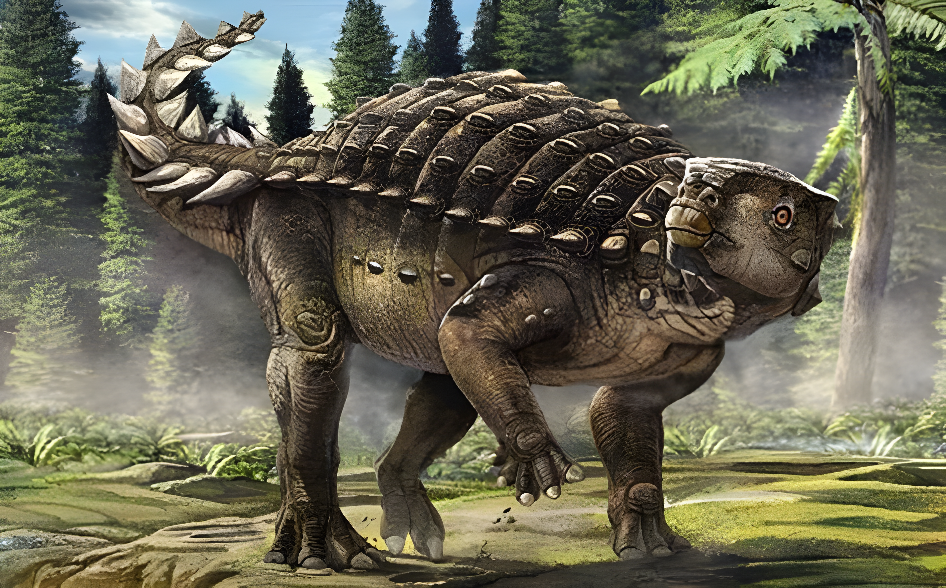Phân bố
Ankylosaurus từng sống ở khu vực ngày nay là miền tây Bắc Mỹ. Hóa thạch của nó chủ yếu được tìm thấy ở Hoa Kỳ, Canada. Chúng sống trong môi trường sống trên cạn, tại các khu vực đồng cỏ và bụi cây ven rừng nhiệt đới.
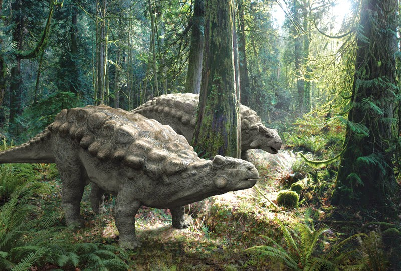Tên khoa học
Được định danh bởi Barnum Brown vào năm 1908. Tên Ankylosaurus có nghĩa là “thằn lằn hợp nhất” theo tiếng Hy Lạp cổ. Từ “hợp nhất” này dựa trên cấu tạo hộp sọ của chúng theo nghiên cứu của các nhà khoa học. Cho đến nay chỉ có một loài duy nhất là A. magniventris ("bụng lớn").
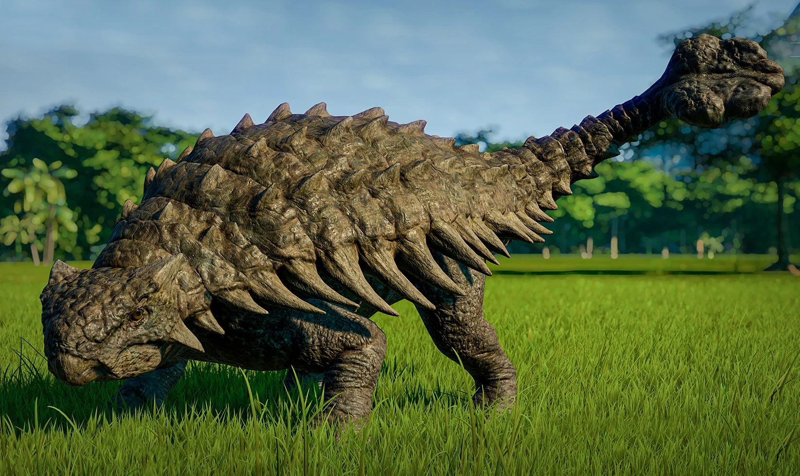Với những bằng chứng thu thập được về chúng và qua nhiều nghiên cứu trong nhiều năm, hầu hết các nhà khoa học đều đồng ý với biệt danh “cỗ xe tăng thời tiền sử” (The prehistoric tank).
Kích thước
Kích thước cơ thể không quá to lớn như nhiều loài khủng long ăn thực vật khác nhưng có thể nói Ankylosaurus là một trong những chi Khủng long đuôi chùy lớn nhất được biết đến cho đến thời điểm hiện tại, một con Khủng long hợp nhất Ankylosaurus trưởng thành có chiều dài trung bình là 6 đến 8 mét (19.7 đến 26.2 ft), chiều rộng tới 1.5 mét, chiều cao 1.7 mét và cân nặng khoảng từ 4,8 đến 8 tấn (5,3 đến 8,8 tấn Mỹ).
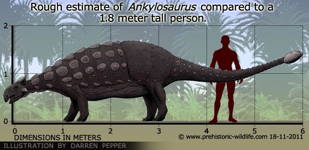Ngoại hình
Ankylosaurus di chuyển chậm chạp bằng bốn chân với hai chi sau dài hơn chi trước với ba ngón chân ở mỗi chi, chúng có một thân hình mập mạp, chắc nịch, đầu to, áp xuống mặt đất với hai sừng mọc từ sau hộp sọ chĩa về phía sau và hai sừng khác phía dưới bẻ về sau và chỉa xuống dưới. Khác với các giáp long khác, lỗ mũi của Ankylosaurus hướng về hai bên thay vì đằng trước. Phía trước hàm có một cái mỏ che các hàng răng nhỏ hình lá ở trong miệng.
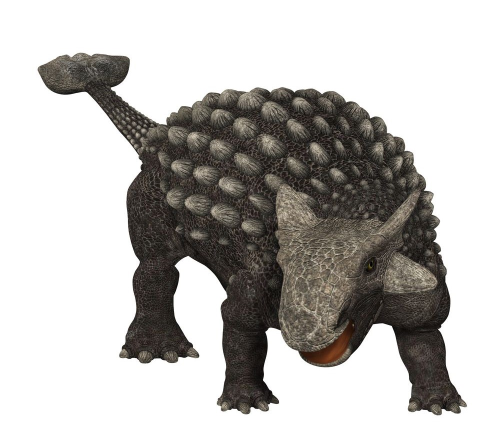Toàn thân được phủ dưới những phiến giáp gọi là vảy xương, cổ cũng được bọc bởi những nửa vòng xương, và ở chóp đuôi, xương kết lại thành một cái chùy lớn. Các xương ở sọ và một số phần khác của cơ thể đều kết lại với nhau, làm tăng khả năng chịu lực tác động từ bên ngoài. Tên chi "thằn lằn hợp nhất" cũng từ đó mà ra.
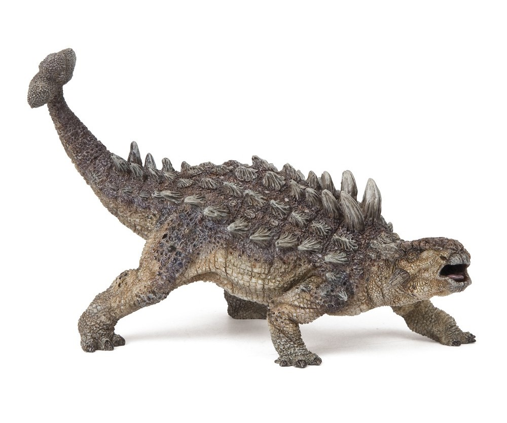Chế độ ăn
Ankylosaurus là một loài ăn thực vật. Cái mõm rộng của chúng được phát triển rất thích hợp cho việc ăn bừa các loại thực vật tầng thấp. Vào năm 1969, nhà cổ sinh vật học người Áo Georg Haas nhận xét chuyển động hàm của chúng bị giới hạn theo chiều lên và xuống, có thể chúng chỉ ăn thực vật mềm không nhám.
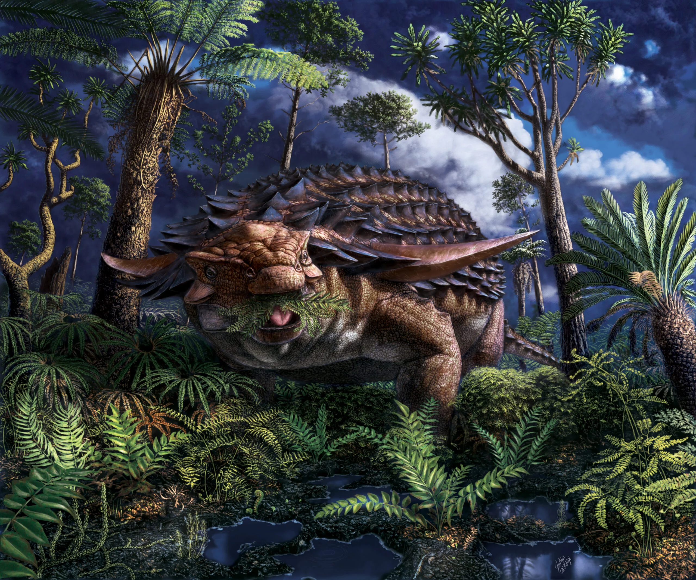Các khám phá khoa học cho thấy nhiều khả năng là Ankylosaurus đã ăn lá cây, hoa quả, những bụi cây thấp và dương xỉ, những loại thực vật có rất nhiều thời đó. Một con Khủng long hợp nhất Ankylosaurus trưởng thành sẽ tiêu tốn khoảng 60kg cây dương xỉ mỗi ngày, tương đương với lượng thực vật khô mà một con voi đực trưởng thành sẽ cần.
Khám phá
Năm 1906, nhà sưu tập Peter Kaisen - một thành viên của đoàn thám hiểm của Bảo tàng Lịch sử Tự nhiên Hoa Kỳ do nhà cổ sinh vật học Barnum Brown dẫn đầu đã phát hiện ra các mẫu xương đầu tiên của Ankylosaurus trong Hệ tầng Hell Creek, gần Gilbert Creek, Montana.
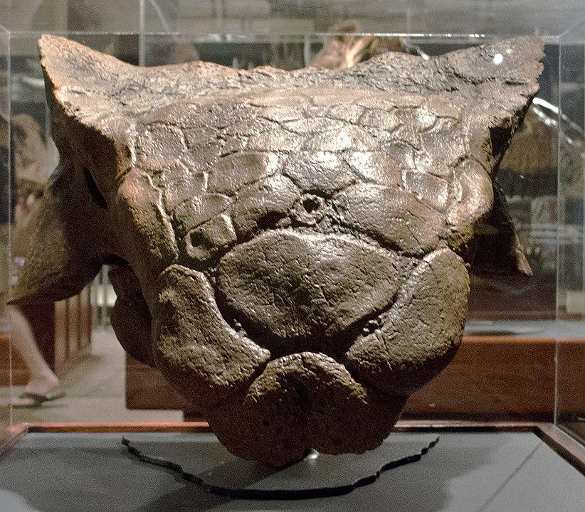Những mẫu xương được phát hiện ban đầu này bao gồm có: phần phía trên của hộp sọ, 2 chiếc răng, 1 phần của xương đòn vai, đốt sống cổ, lưng và nhiều đốt sống khác, xương sườn và hơn 30 mẩu xương vụn. Nhà cổ sinh vật học Barnum Brown đã đặt tên đồng thời có những mô tả một cách khoa học về đại diện loài của chi Ankylosaurus là “Ankylosaurus magniventris” vào năm 1908.
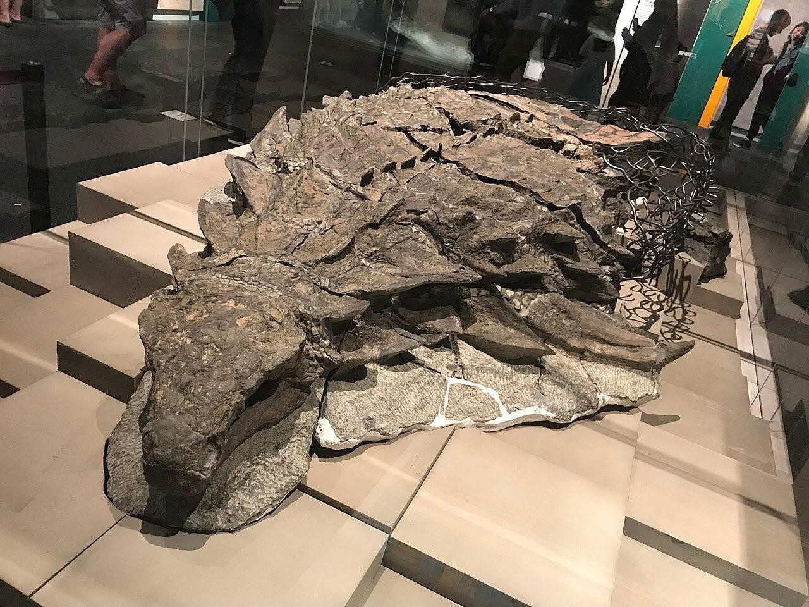Những cổ xe tăng hạng nặng
Dù thuộc bộ Khủng long ăn thực vật nhưng toàn thân của Ankylosaurus lại được bao bọc bởi một lớp áo giáp khá “khủng”. Đây cũng chính là lý do chính khiến chúng có biệt danh “những cỗ xe tăng hạng nặng thời tiền sử”. Tuy không phải là một loài vật thiện chiến hay nhanh nhẹn trong các hoạt động hàng ngày nhưng phần lớn trong những cuộc đối đầu thời đó, Ankylosaurus cũng là một trong những đối thủ nặng ký có thể khiến cả những loài Khủng long bạo chúa phải e dè.
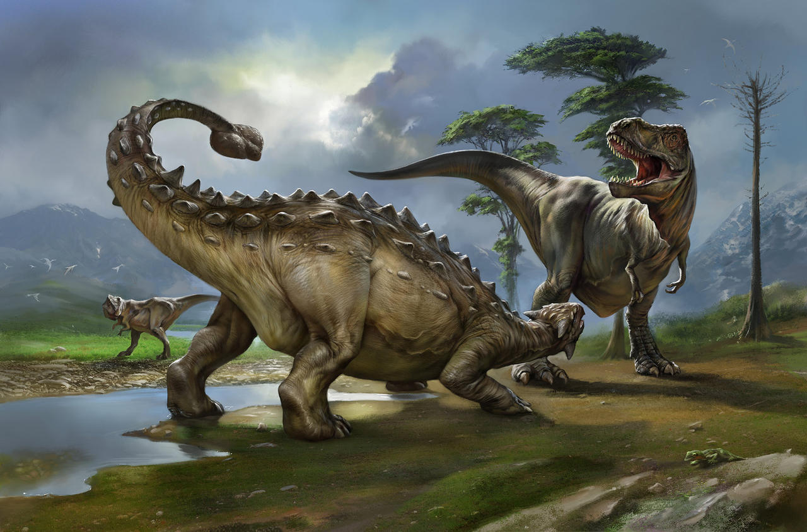Vũ khí đuôi chùy
Một vũ khí lợi hại khác của loài Khủng long hợp nhất Ankylosaurus này chính là cái đuôi chùy của Ankylosaurus, gồm hai vảy xương khổng lồ, với một hàng vảy nhỏ chạy dọc giữa, và hai vảy xương nhỏ ở đầu cuối; chúng che đi mất đốt sống đuôi cuối.
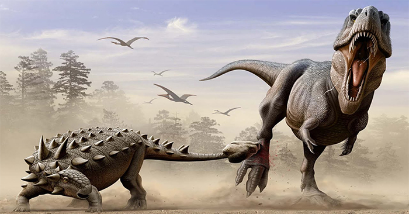Những cơ bắp mạnh mẽ ở đuôi giúp cho lực vung của chúng vô cùng nguy hiểm. Theo ước tính, chỉ cần dính một cú đánh bằng đuôi của Khủng long hợp nhất Ankylosaurus cũng đủ để khiến khủng long bạo chúa có thể bị gãy chân.